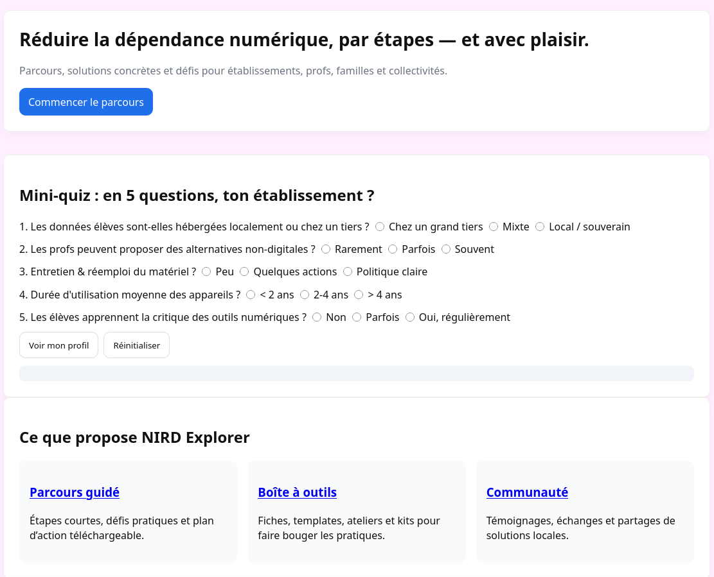

Nuit de l'Info 2025 : NIRD — équipe MIAOU :3
Contexte du projet
Ce projet a été réalisé dans le cadre de la Nuit de l'Info 2025, un événement où des étudiants en informatique se réunissent pour répondre à un défi technique en une seule nuit. L'équipe “MIAOU :3” a développé une application ludique en seulement 16 heures pour promouvoir et diffuser la démarche NIRD, qui vise à consommer les outils informatiques de manière plus consciente et responsable.
Durée : Le développement a été réalisé entièrement en une nuit, dans le temps imparti de l’événement (≈16 h).
Lien du projet : https://NG-48.github.io/NDI_2025_NIRD/accueil.html (hébergée sur GitHub Pages).
Méthodes de travail
Pour mener à bien ce projet en temps contraint, l’équipe s’est organisée rapidement afin de répartir les tâches entre les membres. Certains ont été responsables de la conception des pages HTML (structure, contenu, mise en page), d’autres ont intégré le style avec du CSS et enfin d’autres ont assuré l’interactivité avec du JavaScript.
Le projet est structuré en plusieurs pages HTML réunissant différents aspects de l’application (accueil, parcours, communauté, etc.), et utilise du JavaScript pour gérer certaines interactions dynamiques entre ces pages et leurs éléments.
Compétences travaillées
Ce projet m’a permis de travailler un certain nombre de compétences techniques essentielles au développement web :
- HTML : Structuration de plusieurs pages web liées à l’application ludique, intégration de textes, d’images, et liens de navigation interne.
- CSS : Mise en forme et stylisation des différents composants de l’application pour une interface utilisateur agréable.
- JavaScript : Introduction d’interactivité sur certaines pages (ex. navigation dynamique, réponses à des actions utilisateur).
